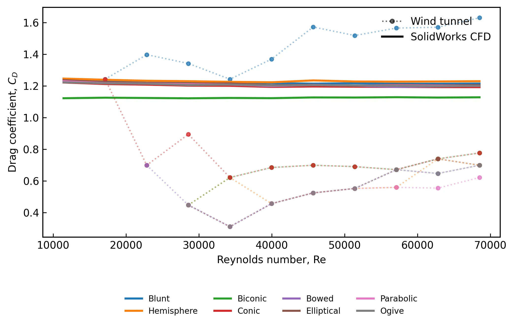

Rocket Nose Cone Aerodynamics
Designed eight interchangeable rocket nose cones and compared drag measurements with SolidWorks CFD.

PROJECT OVERVIEW
What the wind tunnel measured and what the simulation predicted were not the same.
01 / DESIGN
Eight noses, one shared rocket body
Modeled eight interchangeable PLA nose cones and the common rocket-body components in SolidWorks. The shared body kept the test geometry consistent while the nose profiles changed.
Two teammates assisted with printing the test parts. Each specimen was tested at nominally zero angle of attack.
Eight interchangeable nose shapes
Blunt, conic, biconic, parabolic, and other profiles were modeled for a common body. Original CAD files have not yet been published as browser models.
02 / MEASUREMENT
Wind-tunnel results
Collected axial drag measurements using an AEROLAB Educational Wind Tunnel at 20 to 120 mph in 10 mph increments. A teammate helped operate the tunnel; data logging, Excel processing, and calculations were completed independently.
The blunt reference showed a clear drag penalty. Small differences among the seven streamlined shapes were close to the tunnel's 0.01 lbf reporting increment, making their relative ranking unreliable.


03 / SIMULATION
Why the CFD results disagreed
Configured and ran external-flow studies in SolidWorks using the recorded lab conditions of 12.3 psia and 57.9°F. The simulation predicted higher drag than was measured across the test configurations.
A level-3 global mesh (of seven available levels) was used to limit computation time. No mesh-convergence study was completed, so simulation accuracy and sensitivity remain unresolved.
TAKEAWAY
A result is only useful if the uncertainty is understood.
Designed and simulated all eight nose configurations and documented the experiment and results.
The evidence supports lower drag for streamlined noses compared with the blunt reference, not a definitive winner among streamlined designs.
CFD disagreement remains a limitation, not a result to hide.